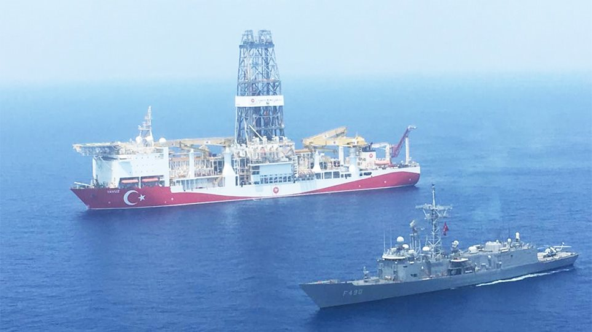

Χωρίς τέλος οι τουρκικές προκλήσεις
Εκτός ελέγχου ο Ρετζέπ Ταγίπ Ερντογάν σχεδιάζει και την αγορά τρίτου γεωτρύπανου το οποίο θα στείλει στην Αναστολική Μεσόγειο Στο σημείο της τρίτης παράνομης τουρκικής γεώτρησης εντός της κυπριακής ΑΟΖ, στον ονομαζόμενο στόχο «Αλάνια-2» προχώρησε χθες τα ξημερώματα το τουρκικό γεωτρύπανο «Πορθητής».
Η μετακίνηση διήρκεσε ελάχιστο χρόνο, αφού το σημείο βρίσκεται ουσιαστικά σε απόσταση περίπου 3,5 ναυτικών μιλίων (6.5 χιλιομέτρων) βόρεια του σημείου που πραγματοποίησε γεώτρηση κατά το τετράμηνο από τις 3 Μαΐου μέχρι και τις 4 Σεπτεμβρίου.
Η γεώτρηση στο σημείο «Αλάνια -1» έγινε σε σημείο όπου το βάθος της θάλασσας είναι περίπου 1.200 μέτρα, ενώ ο στόχος βρισκόταν σε βάθος 3.100 μέτρων κάτω από τον βυθό. Όλες οι πληροφορίες αναφέρουν ότι κατά τη διαδικασία γεώτρησης αντιμετωπίστηκαν πολλά προβλήματα και κάποιες έκτακτες καταστάσεις. Υπενθυμίζεται ότι η γεώτρηση διήρκεσε 120 μέρες, ενώ γεωτρύπανα του ίδιου τύπου, για ίδια βάθη πραγματοποιούν τέτοια γεώτρηση σε περίπου 40 μέρες.
Η δεύτερη γεώτρηση στην περιοχή, σύμφωνα με τους τουρκικούς υπολογισμούς, θα χρειαστεί 56 μέρες και συγκεκριμένα μέχρι και την 1η Νοεμβρίου. Στην Τουρκία διατηρούν σιγή ασυρμάτου - έχουν τεθεί αυστηροί όροι εμπιστευτικότητας και στο προσωπικό.
Ειδικοί αναφέρουν ότι, τα πιο πιθανά ενδεχόμενα με βάση τα στοιχεία και τις ενδείξεις, είναι ότι η δεύτερη γεώτρηση αποσκοπεί στο να εκμεταλλευτεί γεωλογικά δεδομένα που εξασφάλισε, ενδεχομένως ενδείξεις για κάποιο κοίτασμα, για μεγαλύτερες πιθανότητες στη δεύτερη γεώτρηση ή αν η πρώτη γεώτρηση δεν ολοκληρώθηκε λόγω των προβλημάτων και ακολουθεί δεύτερη στην ίδια περιοχή αλλά με πιο ευνοϊκά γεωλογικά δεδομένα.
Το σημείο που βρίσκεται ο «Πορθητής» βρίσκεται σε απόσταση 45 ναυτικών μιλίων (75 χιλιομέτρων) δυτικά της Πέγειας.
Χθες, το γεωτρύπανο βρισκόταν σε διαδικασίες σταθεροποίησης στο νέο σημείο, ενώ γίνονται διαδικασίες αλλαγής πληρωμάτων μέσω του λιμανιού της Αττάλειας.
Την ίδια ώρα, το δεύτερο τουρκικό γεωτρύπανο, το «Γιαβούζ» συνεχίζει επίσης την παράνομη του δραστηριότητα νότια του ακρωτηρίου του Αποστόλου Αντρέα και εντός της υφαλοκρηπίδας της Κυπριακής Δημοκρατίας, με τα στοιχεία να δείχνουν ότι τις τελευταίες μέρες έχει ανταπεξέλθει κάποιων τεχνικών προβλημάτων που αντιμετώπιζε κατά διαστήματα το τελευταίο δεκαπενθήμερο.
Επίσης, το σεισμογραφικό «Μπαρμπαρός» συνεχίζει τις τελευταίες μέρες τη διενέργεια παράνομων σεισμογραφικών ερευνών εντός του τεμαχίου 9 της κυπριακής ΑΟΖ, ενώ το δεύτερο σεισμογραφικό που η Τουρκία μετακίνησε στην περιοχή, το «Oruc Reis», παραμένει στο αγκυροβόλιο του λιμανιού της Αττάλειας.
Να σημειωθεί ότι χτες ο Ταγίπ Ερντογάν, σε ομιλία του στην Άγκυρα, αποκάλυψε ότι σχεδιάζει και την αγορά τρίτου γεωτρύπανου το οποίο θα στείλει στην Αναστολική Μεσόγειο για να μην εξαρτάται η παρουσία του από ξένες εταιρείες.